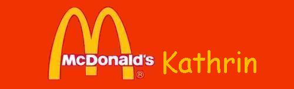
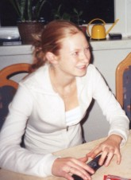

|
|
|  |
|  | Dürfen wir vorstellen: Kathrin. Kathrin Müller mit th. Gerne würde wie sie als “Rotschopf” in unserer Runde bezeichnen, jedoch sind wir uns noch nicht ganz einig, welche Farbe ihr Haupt ziert... Nicht zu übersehen ist auf jeden Fall ihr großes Bedürfnis, begehrt zu werden. Dass dies befriedigt wird, beweist allein schon die Tatsache, dass seit die gebürtige Leipzigerin den Fuß nach Suhl gesetzt hat, nicht mehr alleine war. Und das trotz ihrer Komplikationen beim Rennen (seltsames Aneinander - haften der Beene) und ihrem oft kopierten und wirklich welteinzigartigen Winkstil, der die Teletubbies neidvoll erblassen lässt. Ebenfalls neidisch könnte frau auf ihre den ganzen Körper “bewuchernden” hellblonden Härchen sein, denn so entgeht sie der allmorgendlichen Beinrasur. Einzige Sorge derzeit: Eine Modifikation (bitte bei “Wissen.de” nachschlagen...) unterhalb ihres Bauchnabels. Hier wird Kathrin brünett! Als ob die Männer ‘nen Wegweiser bräuchten, tsts... Da aber Männer allein die Zukunft nicht sichern, macht sie sich auf in die große weite Welt |
||||
bzw. Stuttgart, um eine unschlagbare Karriere als Beamtin hinzulegen. Dass frau davon faul wird ist bekannt, dürfte jedoch kein Problem darstellen, denn schon jetzt kommt sie gerade dann ihren sich stapelnden Pflichten nach, wenn ihre Präsens auf einem höchst offiziellen MC-D Treffen erwünscht ist. Also, leg die unrasierten Beine hoch Süße und viel Glück!
|
|||||